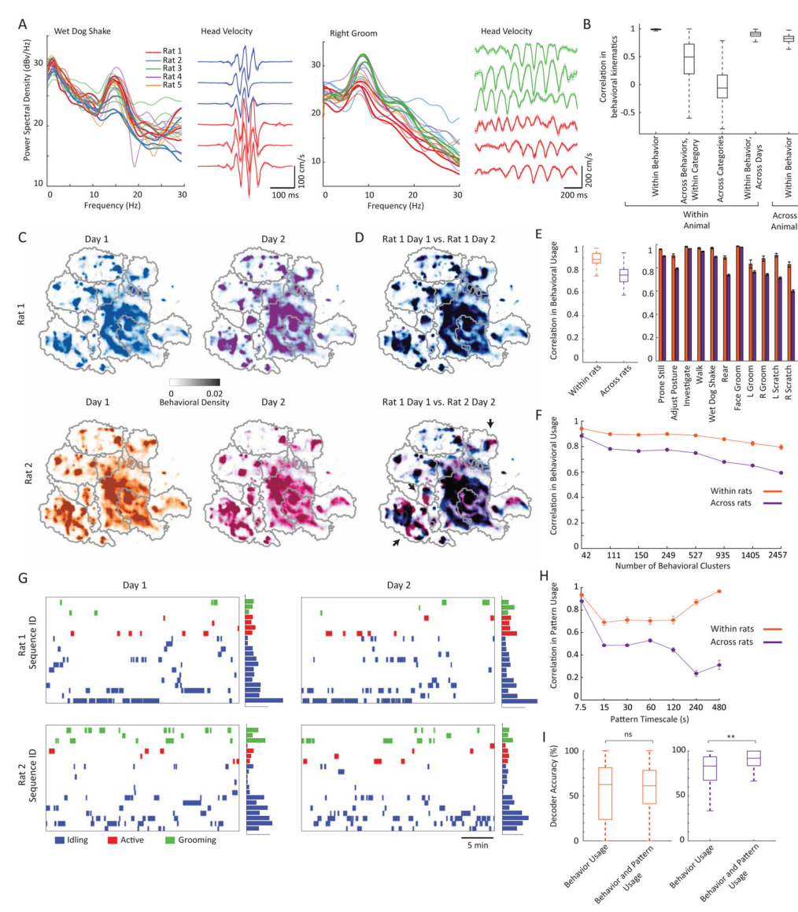

小鼠day7-继续完善细节+其他paper-reading
Day7 将paper中的一些细节继续完善
Figure information
这张图所代表的信息大概是一个速度随时间的变化，可以看出来在这个信号图中，各个部位的速度的变化还是有一定规律的，也就是在一段平稳的低速度后会有一个波峰，可以理解成在一段的静止过后开始运动，可以体现出小鼠的一定运动规律
于是想了一下，索性在这里将所有的辅助材料中的图做一个整理，看一下这些图片都说明了哪些内容，可以辅助理解一些什么。
这里是图S1的部分，其中：
(A) CAPTURE装置示意图。12个动作捕捉摄像机连续跟踪贴在动物头部、躯干和四肢上的20个身体穿孔的位置。
(B)上图:一只小鼠的示意图，上面附有markers的位置，用跟踪的主要身体部位着色，从事不同的物种典型行为。下图:用假想线框表示的3D标记位置，通过动作捕捉跟踪每个描述的行为。
(C)在近72小时连续的动作捕捉记录(上)中，位于单个小鼠头部、躯干和四肢上的markers的速度，与动物质心的速度和房间灯的状态(“开”或“关”)一起测量。在一分钟的时间尺度(更低)上的运动学研究揭示了运动和休息交替周期的调制。用一个30秒boxcar滤波器平滑速度轨迹。
(D)在抓挠、后腿直立和行走的行为序列中(上)，CAPTURE记录显示了所选身体部位笛卡尔和关节角速度分量的节奏调节(中)。以毫秒为时间尺度的单个行为可视化显示了在抓挠和湿狗摇动行为中不同附肢的独立控制（下图）。我们根据矢状面 (s)、冠状面 (c)、横断面 (t) 和节间平面 (i) 来定义关节角度（Methods）
这是图S2，主要用于说明2D的卷积网络不适用于跨多个行为的全身3D跟踪，四个图给出了以下的信息：
(A-B)示例视频图像，以及使用CAPTURE和DeepLabCut进行跟踪的跟踪点的线框表示。我们使用100到100,000个视频帧（即调整数量级从10^3到10^6）来训练DeepLabCut，这些视频帧带有标签，表明使用CAPTURE跟踪的20个标记点的位置。deepplabcut使用6台摄像机对训练数据集中(A)或(B)外带有标记的动物进行预测。
(C) DeepLabCut预测与使用CAPTURE跟踪的点的位置之间的平均3D距离，跨越训练帧，相机编号和训练数据集内外的老鼠的存在(分别标记为样本内或样本外)。运动捕捉重投影误差显示为比较。误差条(平均值±s.e.m)在标记内，分别对3个样本内动物和2个样本外动物在306,356帧和249,241帧内计算。
(D) CAPTURE和DeepLabCut之间10-30毫米的精度差异会在准确重建动物姿势的能力上产生巨大的变化。对于样本内和样本外的动物，我们计算了DeepLabCut报告的19个不同身体片段的长度与使用CAPTURE跟踪的真实片段长度在18毫米以内的帧的比例。图中显示了用于CAPTURE的正确段长度的比例，以便进行比较。阴影的误差条(线内)显示了100帧自举样本的标准偏差。

图三主要是对小鼠写行为学做了一些综合运动学分析
(A)我们开发了一种行为映射程序来识别CAPTURE记录中的行为。我们首先定义了一组每帧140个特征，描述了500毫秒局部窗口内大鼠的姿势和运动学。许多这些特征是通过计算大鼠的特征姿势从测量的运动学(上)，其中包括常见的观察到的姿势变化，如后腿直立或转向左右。然后，我们使用小波变换(中)计算特征姿态分数随时间的时频分解。我们对所有记录的16只大鼠(10.47亿帧)的特征进行了次采样，并使用t-SNE将它们共同嵌入到两个维度中，以创建一个行为图，我们使用分水岭变换对其进行聚类(图S5)(方法)。我们在行为图中标注了聚类，这表明行为类别在地图的不同区域分离。从这些行为集群中，我们计算了描述行为使用随时间变化的图(下图)。
(B)节奏行为时不同身体部位标记物速度的功率谱。由于不同身体部位的总功率差异较大，因此在头、前肢和后肢的每个标记组内分别缩放功率谱密度。从n=4只动物两天内计算的功率谱。
(C)上:一只大鼠两天内属于节律性行为的个体行为簇的功率谱密度。功率谱密度计算的速度超过一个标记的身体部分列出。彩色线条对应下面的例子。插图显示了示例行为簇在粗行为类别中的位置。光谱密度报告相对于1 (mm·s−1)2/ Hz。下:从样本集群中随机抽取的单个标记运动学实例。
(D)从与后腿直立和伸展相关的非节奏行为集群中选择的示例姿势。
图S4 老鼠的行为在等级上被组织成行为序列和状态。
(A)我们开发了一种时间模式匹配算法来检测我们行为记录中的重复行为模式。我们在15-s或2分钟的时间尺度上平滑线图，并计算两两相关性以产生相似矩阵，我们设置阈值来提取高价值的非对角线元素。这些对应于在数据集中的两个或多个时间点观察到的行为使用模式。我们将这些模式聚类以识别重复的序列和状态，这些序列和状态可以组织以识别层次结构。用4-s和15-s的boxcar滤波器分别对一只动物全天的记录进行平滑处理，对应左图的图和相似矩阵。树形图和聚集态是示意图的例子。如图3A所示。
(B)以分钟(上)和小时(下)时间尺度显示的图，用4-s滤波器进行平滑，以便可视化。图中显示了在每个时间段内观察到的行为子集，根据它们在不同行为序列(上)和状态(下)中的隶属度进行排序和阴影。使用模式匹配算法检测到的状态和序列如上所示，并根据它们在不同行为类别中的隶属关系在(B)和(C)中排序。
(C)热图显示了不同行为类别的序列(上)和状态(下)的组成。
(D) 不同序列和状态下的行为模式的例子。序列显示重复的行为使用时间模式，而状态显示行为频率的平均增加，但没有详细的时间结构。为了清晰起见，只显示了频繁发生的行为的子集。如图3A所示，行为是根据它们在行为类别中的隶属关系来着色的。
(E)为了显示这些序列和状态的层次组织，我们计算了一棵堆叠树，其下层链路反映了在每个序列中观察到不同行为的概率，上层链路反映了在每个状态下观察到不同序列的概率。行为和链接根据其行为类型着色:绿色(梳理):梳理和抓;蓝色(空闲):俯卧静止和姿势调整;红色(活动):调查、行走、摇晃和直立。为了清晰起见，我们显示了八分之一的行为，并且我们只可视化链接，分别显示了行为和序列的发生概率大于0.05和0.1。阴影区域对应于(F)中高亮显示的区域。
(F)在(E)中突出显示的正确梳理行为序列的层次安排(左)，以及每个序列中行为子集的示例线图(右)。为了清楚起见，在层次结构中，我们只显示四种行为中的一种，以及所使用的行为状态的子集。在动物中，观察到的梳理顺序与行为状态之间存在显著的互信息(0.62 vs 10−3 nats, P=0.004，符号检验，观察梳理顺序的时间超过9天)。
注： 这里一块都是讲行为分析的，A和B的图都比较容易看懂，C是选择了一些行为，在sequence和state两个尺度上去展示了各个行为的百分比，D图则是具体挑选了两个sequence和state举例，这里可以关注他举例中的sequence和state之间的关系，比如sequence这里的例子是压水杆的任务或者右侧的抓挠，而state的例子是“保持”和“探索”，从这也可以看出一些分类的依据。简单来说，一些比较有时间上的顺序的行为就可以被记作“序列”，而更加复杂的行为之间可能没有一些固定的时间顺序或者间隔，把这一个更加复杂的行为记作“状态”，状态更像是由各个序列所组成的，所以用层级结构来表示。E和F中是选取了一些较少的内容，有更加清楚的层级结构展示。
图S5 咖啡因和安非他明对唤醒的影响相似，但对行为组织的影响不同
(A)基线期间和急性给药生理盐水、咖啡因(10mg /kg)或安非他明(0.5 mg/kg)后的行为密度图。与基线(32±1%)相比，给予咖啡因(80±1%)和安非他明(84±1%)后，动物花在运动上的时间比例显著增加，但给予生理盐水(17±1%后，动物花在运动上的时间比例显著增加;咖啡因和安非他命组P=0.016，载药组P=0.4，药物和载药组n=4只，基线组n=5只，每组4,635-7,391 s)。两种兴奋剂化合物都改变了行走和后腿直立的时间(图片中箭头的位置)。
(B)咖啡因和安非他明增加了主动运动行为的时间比例，而减少了闲置行为，但对梳理的影响不同，单独安非他明显示抑制梳理活动(所有$P<10^{−5}$，二项检验，每个行为类别n=238-989有效样本)。
(C)咖啡因和安非他明引入了在baseline时很少观察到的新类型的活跃和梳理行为，例如高速行走和更有力的梳理。彩色条表示折叠变化显著的调制行为$(P<10^{−6}$，摄动条件下速率的泊松概率，Benjamini-Hochberg校正)。通过服用咖啡因后的调节来分类所有的行为变化(右)，揭示了咖啡因和安非他命都增加了许多活跃行为的频率，减少了许多梳理行为的频率。
(D)箱须图显示了基线和药物条件下序列(上)和状态(下)概率向量的相关系数。安非他命和咖啡因诱导了长时间尺度行为组织的显著变化(*P=1.5·106，P<0.005;rank-sum测试;N =条件之间的16对天)。由于在药物载体和时间匹配控制期间缺乏运动，这里的基线数据取自两天的记录。
(E)热图显示了行为类别方面的状态组成(上)和这些状态的使用与基线相比的折叠变化(下)，排序以强调不同条件下的变化。安非他命在动物身上引入了高度不同的状态，用黑线表示(视频S10)。
图S6Fmr1-KO大鼠表现出特殊的持续性身体梳理序列
(A)记录2天的Fmr1-WT (n=3)和Fmr1-KO (n=4)年龄匹配的笼内同伴的行为密度图。箭头突出了Fmr1-KO大鼠毛发梳理增加的时期。野生型和敲除型大鼠的移动时间相同(35.1±2% vs 35.0±0.7%，秩和检验，P=0.85;WT大鼠和KO大鼠分别记录6、8天，每组445,601-673,473 s)。
(B) Fmr1-KO而非Fmr1-WT动物花在梳理毛发上的时间增加，以空闲行为为代价(所有P<10−5，二项检验，每个行为类别的neff= 166-232个有效样本)。与此同时，单独梳理毛发的停留时间也显著增加(在所有梳理行为中，KO和WT动物的停留时间增加了10±2%，P=0.03符号秩检验，n=208次梳理行为，相比之下，活跃行为和空闲行为的平均停留时间变化<0.01%)。
(C) Fmr1-KO而非Fmr1-WT动物的行为类别组成，尤其是梳理行为发生了实质性改变。彩色条表示在所述条件下显著调节的行为折叠变化(P<10−6，泊松变化率概率，Benjamini-Hochberg校正)。通过Fmr1-KO动物的调节来分类所有行为变化(右)，显示野生型和敲除动物的行为调节之间几乎没有共性。
(D)箱须图显示了WT和Fmr1-KO大鼠序列和状态使用概率的相关性。基因型间的相关性显著降低(序列和状态的相关性分别为*P=0.0006和P=0.01;秩和检验，条件间n=48对天)。
(E)热图显示了在行为类别方面的序列组成(上)和这些序列的使用与基线相比的折叠变化(下)，排序以强调不同条件下的变化。黑线突出了敲除大鼠中特殊修饰序列的升高水平。

图7 长时间规模的行为结构能反映行为个性
(A)左:n=5只大鼠，每组3-5天，两个单独行为分类的front head marker速度功率谱密度。光谱密度报告相对于1 (mm·s−1)2/ Hz。右图:每组行为中头部的平均笛卡尔速度，两只老鼠在三天内的表现。阴影条是s.e.m。
(B)箱形图显示了五种单独比较的140维行为特征向量的Pearson相关性:(1)相同行为的不同实例，同一粗糙类别的不同行为(2)或不同粗糙类别的不同行为(3)的动物内、日内比较，以及(4)和(5)动物内不同天的行为平均值。所有P<10−10,Kruskal-Wallis检验和Bonferroni修正后的事后检验，n=1731, 13386, 135094, 5264, 22934，对每个比较的特征向量。只分析每天至少5次的行为。
(C)具有代表性的行为密度图，显示了两只大鼠日常行为使用的一致性
(D)覆盖的t-SNE密度图(上)和鼠(下)。
(E)在所有类别(左)和每个行为类别(右)中，在不同的日期和老鼠中，行为使用的概率向量之间的Pearson相关性。大鼠之间的相关性显著降低，尤其是饲养和梳理行为(符号秩检验，所有比较P<10−7;N =36和348对，分别在动物体内和动物之间)。行为使用随时间的变化与记录之间的日历天数之间存在显著相关性(P = 0.002, f检验与零模型相比，R2 =0.23, n=36)，表明行为使用随时间的变化存在一些漂移。
(F)在行为空间的7个越来越细粒度的聚类中，数天内行为使用的概率向量之间的Pearson相关性(方法)。
(G)两只大鼠在两个不同日子的序列使用样线图，以及显示全天平均序列使用的汇总条形图。为了清晰起见，我们只展示了序列的一个子集，用10-s滤波器平滑。条形图上的比例尺对应10%的帧。
(H)跨时间尺度使用时间模式的平均Pearson相关性。我们发现，与长时间尺度相比，动物在短时间尺度上的使用相似性显著增加(有符号秩检验，P<10−10,174对天)。
(I)我们训练了一个随机森林分类器，使用行为使用统计来区分单个大鼠或单个天。长时间尺度模式利用显著提高了物种的识别能力，但在物种内的不同天数间没有显著提高(P=0.01, 0.6, n=21 d)。
后续做了一点织物检测那边的工作，不过有点意思的是，这边也需要用到小波变换，所以把小波变换的概念做个简单整理。
小波变换（这里先做简单解释，具体的理论说明明天再做补充）
小波变换（Wavelet Transform）是一种信号处理和数据分析技术，用于在不同时间尺度和频率范围内分析信号或数据。它与傅立叶变换不同，傅立叶变换在整个时间范围内使用相同大小的窗口来分析信号，而小波变换使用不同尺度的小波函数来分析信号的不同部分，使得它能够更好地捕捉信号的局部特征。
以下是小波变换的一些关键特点和用途：
多尺度分析：小波变换能够在不同时间尺度上分析信号。这意味着它可以同时捕捉信号的高频和低频成分，使得它在分析非平稳信号（时间变化的信号）时非常有用。
局部性：小波函数是局部的，意味着它们在时间域内只在有限的时间间隔内存在非零值。这使得小波变换能够更好地捕捉信号的局部特征和瞬态现象。
时频分析：小波变换提供了信号在时域和频域之间的精确时频分析。这使得它适用于许多应用，如信号压缩、噪声去除、图像处理和模式识别等。
小波基函数：小波基函数是小波变换的核心，它们可以选择不同的小波基函数以适应不同类型的信号和应用。常见的小波基函数包括Haar小波、Daubechies小波和Morlet小波等。
连续小波变换和离散小波变换：小波变换可以分为连续小波变换（Continuous Wavelet Transform，CWT）和离散小波变换（Discrete Wavelet Transform，DWT）。CWT在连续信号上操作，而DWT适用于离散信号，如数字图像和时间序列。
小波变换在许多领域中都有广泛的应用，包括信号处理、图像处理、音频处理、生物医学工程、金融分析等。它的主要优势在于能够提供多尺度、局部化的分析，使得它适用于处理复杂的非平稳和非线性数据。
1 | import numpy as np |
这里选用了一个CSDN上的代码示例做演示，也是能够比较清楚的说明python中的小波变换库的效果：
可以看到 左上角是原图的灰度图显示，接下来依次是原图的水平方向高频分量对应图像，竖直方向高频分量对应图像以及对角线方向高频分量对应图像，可以看到还是有明显的差异存在。
PS：这里是一些简单的概念和代码示例，具体的理论以及复杂一些的代码（比如CAPTURE中的wavelet使用）会在明天的blog中进行补充